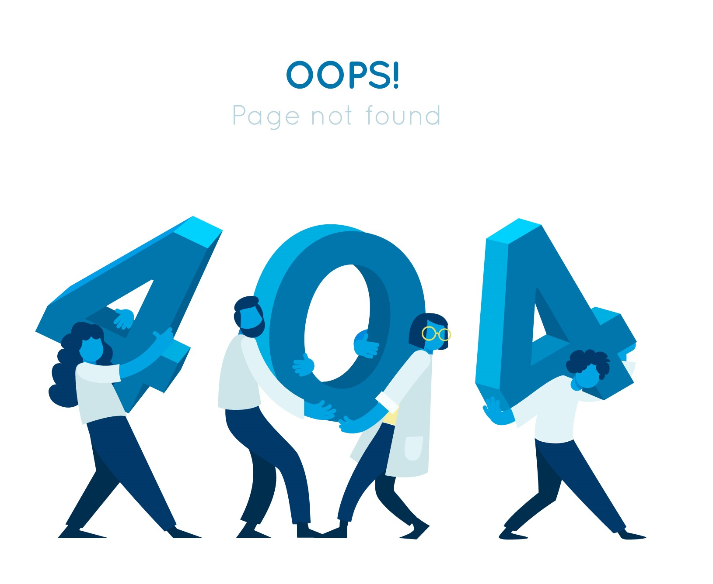

<section class="notfound w-100">
  <div class="text-center">
    <div>
      
    </div>
    <h1 class="fw-bold">404 Not Found</h1>
    <h4 class="fw-bold p-3">Your visited page not found. You may go home page.</h4>
    <button class="btn btn-primary" routerLink="/home">Back to home page</button>
  </div>

</section>